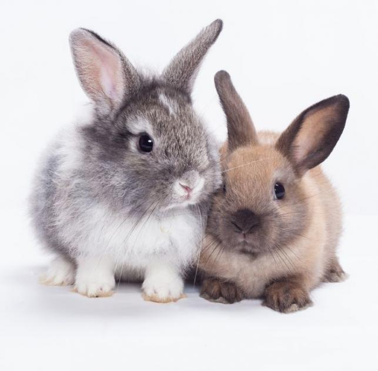

Weboldal

A kedvenc állatom a cica
Az SZTE Gyakorló Gimnázium ás Általános Iskolába járok
Imádom az informatikát
9.c-s vagyok, és te?
A kedvenc énekesem Johanna
Már 7 éve zongorázok
A kedvenc tanárom az infó tanci
Nagyon szeretek zenét hallgatni
Kedvenc zeném a Szeress egyet, Himnusz
Imádok githubon szerkeszteni